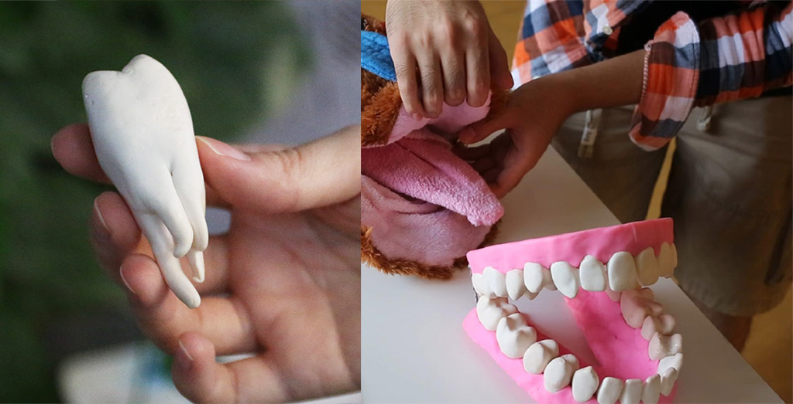

Bass Brushing Technique
Do you really know how to brush your teeth? If you didn't learn as an adult, you're probably not doing it right. By shaping the teeth model with clay, demonstrating by a squirrel puppet and a mandrill doll (which was made by ourselves), We made this video to show the Bass Brushing Technique.
Making Processing
